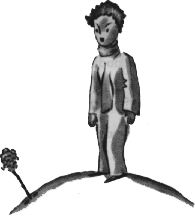
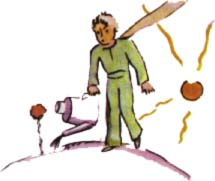
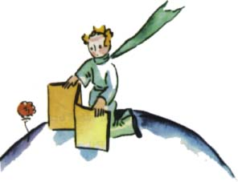
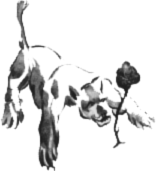
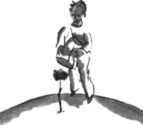

Malý princ nemohl v té chvíli skrýt svùj obdiv:
"Jak jste krásná!"
"®e ano," odpovìdìla ti¹e kvìtina. "A pøi¹la jsem na svìt zároveò se sluncem..."
Malý princ správnì uhodl, ¾e není moc skromná. Ale tolik dojímala!
"Myslím, ¾e je èas posnídat," dodala po chvilce, "byl byste tak hodný a postaral se o mne..."
A malý princ, celý zmaten, ¹el pro konev s èerstvou vodou a obslou¾il kvìtinu.

Tak ho velice brzy potrápila svou ponìkud plachou marnivostí. Napøíklad jednoho dne, kdy¾ mluvila o svých ètyøech trnech, øekla malému princi:
"Jen a» si pøijdou tygøi se svými drápy!"
"Na mé planetì pøece nejsou tygøi," namítl malý princ, "a tygøi trávu ani ne¾erou."
"Já nejsem tráva," odpovìdìla jemnì kvìtina.
"Ó, promiòte..."
"Já se tygrù vùbec nebojím, ale mám hrùzu z prùvanu. Nemáte, prosím, nìjakou zástìnu?"

Hrùzu z prùvanu... Pro rostlinu to není právì ¹»astné, øekl si malý princ. S touhle kvìtinou je potí¾...
"A veèer mì dejte pod poklop. U vás je veliká zima. Je to tu ¹patnì polo¾ené. Tam, odkud pøicházím..."
Ale zarazila se. Pøi¹la jako semeno. Nemohla z jiných svìtù nic poznat. Zahanbena, ¾e se nechala chytit pøi pokusu o tak prostinkou le¾, dvakrát nebo tøikrát zaka¹lala, aby malého prince upozornila, ¾e udìlal chybu:
"A co ta zástìna?"
"Chtìl jsem pro ni jít, ale mluvila jste se mnou!"
Tu nucenì zaka¹lala, aby v nìm pøece jen probudila výèitky svìdomí. A tak malý princ, aèkoliv mìl dobrou vùli mít ji rád, brzy o ní zapochyboval. Bral vá¾nì bezvýznamná slova, a byl proto velice ne¹»asten.

"Nemìl jsem ji poslouchat," svìøil se mi jednoho dne. "Kvìtiny nesmíme nikdy poslouchat. Musíme se na nì dívat a vdechovat jejich vùni. Moje kvìtina naplòovala vùní celou planetu, ale nedovedl jsem se z toho tì¹it. Historka s drápy, která mì tak dopálila, mìla ve mnì vzbudit vlastnì nìhu..."
A je¹tì se mi svìøil:
"Tehdy jsem nedovedl nic pochopit. Mìl jsem ji posuzovat podle jednání, ne podle slov. Obklopovala mì vùní a jasem. Nemìl jsem, myslím, kdy utéci. Mìl jsem pod jejími chabými lstmi vytu¹it nì¾nost. Kvìtiny si tak odporují! Ale byl jsem pøíli¹ mladý, abych ji dovedl mít rád."
